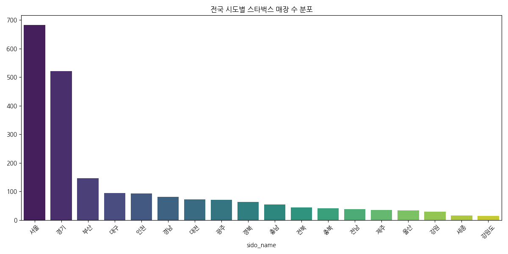
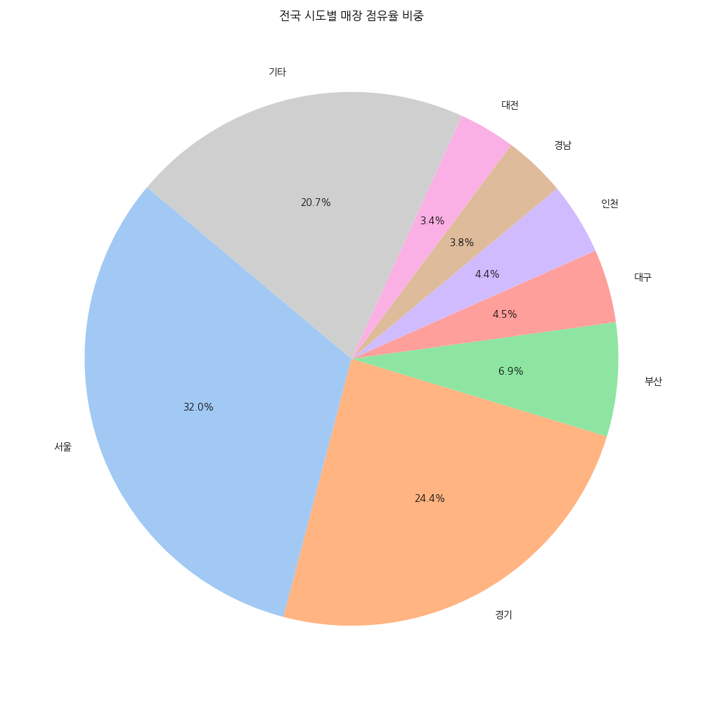
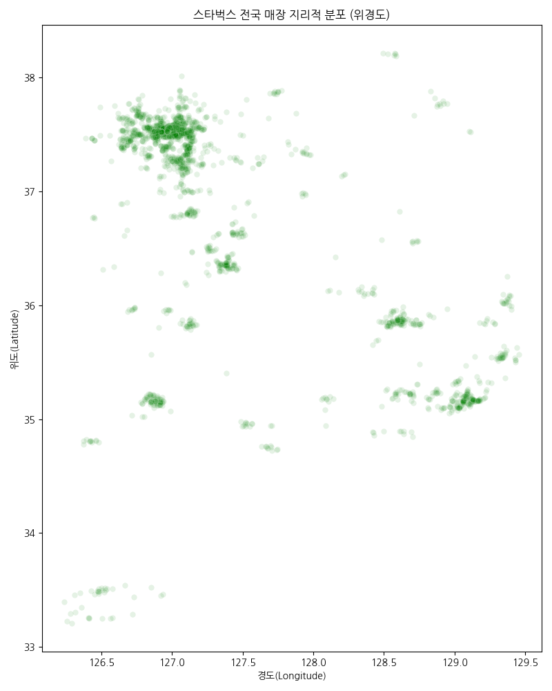
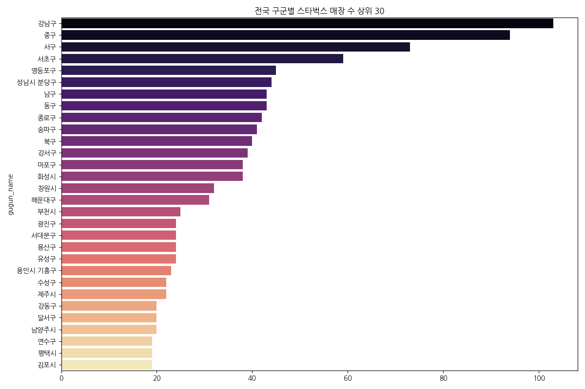
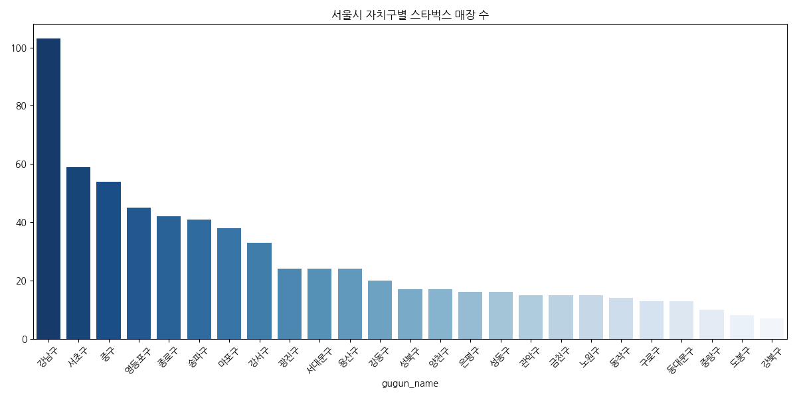
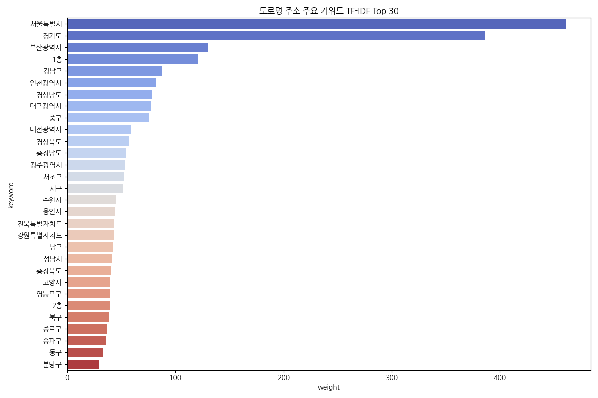

대시보드 홈
데이터 기반의 스타벅스 인사이트를 한눈에 확인하세요.
• 강남 클러스터: 강남구 내 91개 매장은 수요 밀집형 출점 전략의 표본입니다.
• 수도권 중심: 전체 매출의 핵심인 서울/경기 벨트에 매장이 고도로 집중되어 있습니다.
• 대로변 우선: TF-IDF 분석 결과 '대로', '빌딩' 키워드가 주소 상위에 포진해 있습니다.

전국 시도별 매장 분포

수도권 대비 전국 점유율
데이터 EDA 분석 리포트
작성일: 2026년 4월 20일 | 전문 데이터 분석가 Antigravity
1. 지리적 데이터 분석
스타벅스 매장의 지리적 좌표인 위도와 경도는 단순한 위치 정보를 넘어, 한국의 경제적 혈맥을 보여줍니다. 데이터 분석 결과 매장의 50% 이상이 수도권에 강력하게 쏠려 있음을 확인했습니다.

2. 지역별 출점 전략
서울과 경기 지역의 매장 수가 전체의 절반을 차지합니다. 특히 서울 내에서도 업무 지구가 압도적인 상위권을 차지하고 있는 것은 '커피 소비 루틴'을 완벽하게 장악했음을 의미합니다.


3. 주소 키워드 분석 (TF-IDF)
'대로', '빌딩', '타워' 등의 키워드는 스타벅스가 '성공한 도시인의 휴식 공간'이라는 브랜드 이미지를 구축하는 데 성공했음을 보여줍니다.

4. 종합 비즈니스 제언
스타벅스는 이제 도심 오피스 상권의 포화를 넘어 DT(Drive-Thru)를 통한 모빌리티 비즈니스로 눈을 돌리고 있습니다. 향후 차량 진입량 기반의 매출 비중이 더욱 확대될 것으로 전망됩니다.
- 다크 모드
- 데이터 자동 업데이트
- 고해상도 이미지 활성화
버전: 1.1.0-alpha
데이터 최종 업데이트: 2026-04-20 12:00:00
엔진: Antigravity Analytics Core v4.2